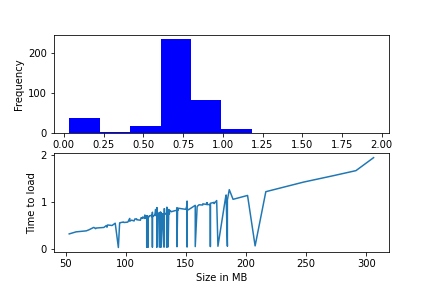
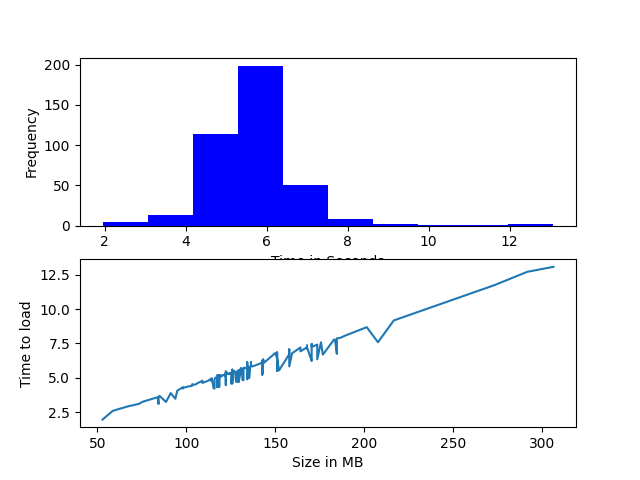
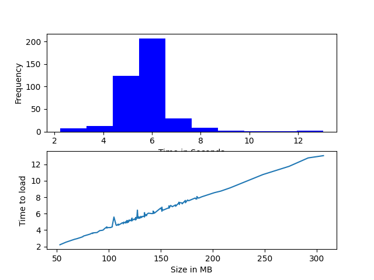
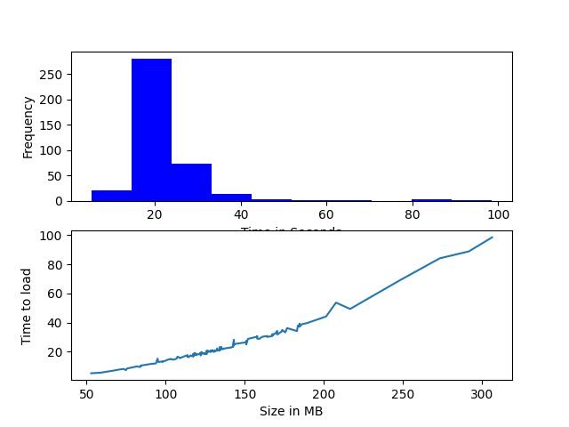

Benchmarks¶
Here we compare data loading speeds using a TorchDataset against HDF5 loading with different compressions.
CQ500 Summary on @xeTaiz’s PC (Ryzen 3700X, old slow HDD)¶
Dataset Type |
Average Time |
Max Time |
Total Time |
|---|---|---|---|
TorchDataset |
0.71s |
1.95s |
278.9s |
HDF5 Reopen |
5.76s |
13.5s |
2276.3s |
HDF5 OpenOnce |
5.75s |
13.0s |
2271.3s |
HDF5 LZF |
11.90s |
47.04s |
4698.6s |
HDF5 GZIP |
22.34s |
98.55s |
8823.2s |
CQ500 TorchDataset 395 examples¶

Total Time: 278.9s
Average Time: 0.706s
Max Time: 1.948s
CQ500 H5Dataset 395 examples (Reopen file handle on __getitem__)¶

Total Time: 2276.3s
Average Time: 5.76s
Max Time: 13.53s
CQ500 H5Dataset 395 examples (Open file once)¶
 Total Time: 2271.3s Average Time: 5.75s Max Time: 13.0s
CQ500 H5Dataset 395 Examples (LZF Compression)¶
Total Time: 4698.6s
Average Time: 11.9s
Max Time: 47.0s
CQ500 H5Dataset 395 Examples (GZIP Compression)¶

Total Time: 8823.2s
Average Time: 22.34s
Max Time: 98.55s